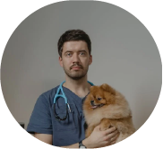
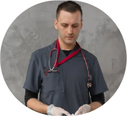
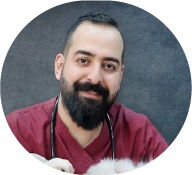

VETERINARIOS

Dr. Alejandro López
Es un veterinario con más de 10 años de experiencia en medicina de pequeños animales.

Dr. Manuel Ramírez
Es un veterinario especializado en cirugía ortopédica y traumatología.

Dr. Carlos Martínez
Es un veterinario de animales exóticos con un profundo conocimiento en el cuidado de aves, reptiles y mamíferos poco comunes.